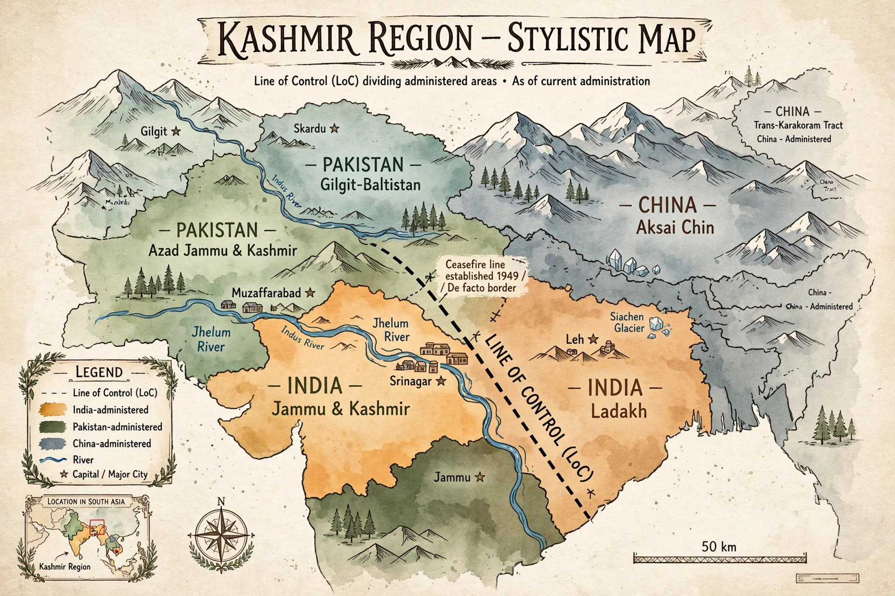

| Kashmir conflict | |
|---|---|
| Began | 1947 (accession of Jammu and Kashmir) |
| Claimants | India, Pakistan, China |
| Administered by | India (Jammu & Kashmir, Ladakh); Pakistan (Azad Kashmir, Gilgit-Baltistan); China (Aksai Chin, Trans-Karakoram Tract) |
| Dividing line | Line of Control (since 1972) |
| Wars | 1947–48, 1965, 1971 (partly), Kargil 1999 |
The Kashmir conflict is a territorial dispute over the Kashmir region, principally between India and Pakistan, with China also controlling part of the territory. It began with the partition of British India in 1947 and has caused several wars and a long-running insurgency, remaining one of the most dangerous flashpoints in Asia — the more so because all three claimant states possess nuclear weapons.
At independence, the princely state of Jammu and Kashmir, ruled by the Hindu Maharaja Hari Singh over a Muslim-majority population, was expected to join either India or Pakistan. As tribesmen from Pakistan invaded in October 1947, the Maharaja acceded to India in return for military help. The resulting Indo-Pakistani War of 1947–48 ended with a UN-brokered ceasefire that left the state divided; a promised plebiscite on its future was never held. Pakistan controls the western and northern areas (Azad Kashmir and Gilgit-Baltistan); India controls the Kashmir Valley, Jammu, and Ladakh; China occupies Aksai Chin in the east, seized in the Sino-Indian War of 1962.
India and Pakistan fought again over Kashmir in 1965, and the 1971 war — though centered on East Pakistan and ending in the creation of Bangladesh (see Bangladesh Liberation War) — also saw fighting in the west. The 1972 Simla Agreement renamed the ceasefire line the Line of Control. From 1989, an armed insurgency and separatist movement in Indian-administered Kashmir, which India attributes in part to Pakistani support, has caused tens of thousands of deaths. In 1999 the two countries fought the limited Kargil War high in the Himalayas, a year after both tested nuclear weapons.
In August 2019 the Indian government revoked Article 370 of its constitution, ending Jammu and Kashmir's special autonomous status, bifurcating the state into the union territories of Jammu and Kashmir and Ladakh, and imposing security restrictions and a communications blackout — moves Pakistan condemned and took to international forums. Cross-border crises, such as those following the 2019 Pulwama attack and subsequent Balakot airstrike, periodically bring the nuclear-armed neighbors close to open conflict.
See also: Indo-Pakistani wars and conflicts, Line of Control, Indian independence movement